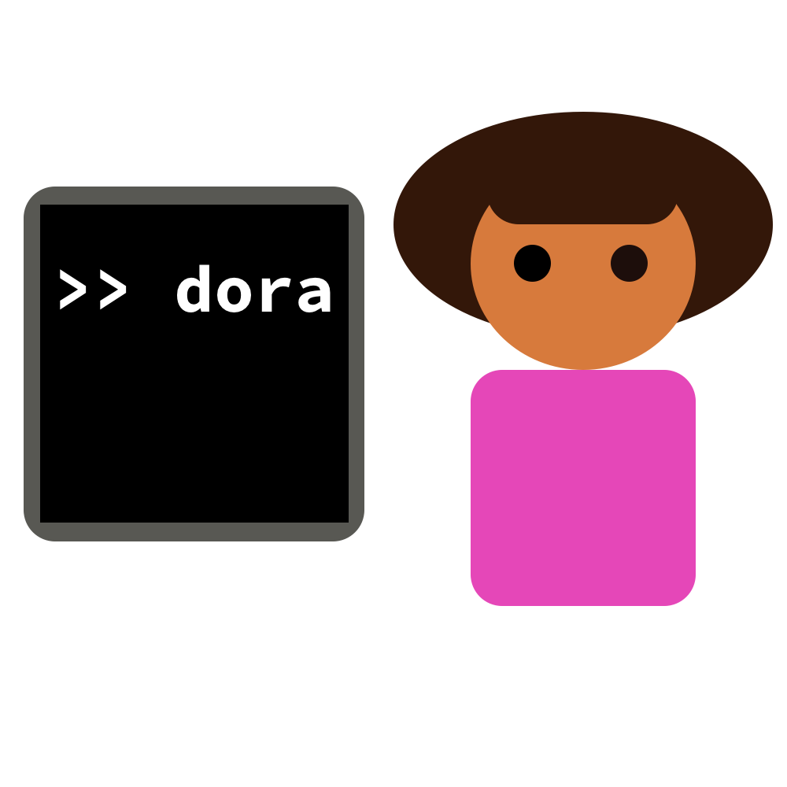

Package dora
Introduction
Dora is an experiment launching tool which provides the following features:
- Grid search management: automatic scheduling and canceling of the jobs to match what is specified in the grid search files. Grid search files are pure Python, and can contain arbitrary loops, conditions etc.
- Deduplication: experiments are assigned a signature based on their arguments. If you ask twice for the same experiment to be ran, it won't be scheduled twice, but merged to the same run. If your code handles checkpointing properly, any previous run will be automatically resumed.
- Monitoring: Dora supports basic monitoring from inside the terminal. You can customize the metrics to display in the monitoring table, and easily track progress, and compare runs in a grid search.
Some Dora concepts:
- A Grid is a python file with an
dora.explore function, wrapped in adora.Explorer. The explore function takes adora.Launcheras argument. Call repeatidly thedora.Launcherwith a set of hyper-parameters to schedule different experiments. - An XP is a specific experiment. Each experiment is defined by the arguments passed to the underlying experimental code, and is assigned a signature based on those arguments, for easy deduplication.
- A signature is the unique XP identifier, derived from its arguments. You can use the signature to uniquely identity the XP across runs, and easily access logs, checkpoints etc.
- A Sheep is the association of a Slurm/Submitit job, and an XP. Given an XP, it is always possible to retrieve the last Slurm job that was associated with it.
Useful reads
As a Dora user, the following documentation will prove useful to you:
Launcher: a Launcher instance is passed to all explore function defined in grid search files.Explorer: you can subclass theExplorerclass to customize metrics displayed in a grid search file.argparse_main(): used to wrap your training script when it uses argparse.hydra_main(): used to wrap your training script when it uses hydra.dora.main.get_xp: get the currentXP.

Expand source code
# Copyright (c) Facebook, Inc. and its affiliates.
# All rights reserved.
#
# This source code is licensed under the license found in the
# LICENSE file in the root directory of this source tree.
"""
## Introduction
Dora is an experiment launching tool which provides the following features:
- Grid search management: automatic scheduling and canceling of the jobs
to match what is specified in the grid search files. Grid search files
are pure Python, and can contain arbitrary loops, conditions etc.
- Deduplication: experiments are assigned a signature based on their arguments.
If you ask twice for the same experiment to be ran, it won't be scheduled twice,
but merged to the same run. If your code handles checkpointing properly,
any previous run will be automatically resumed.
- Monitoring: Dora supports basic monitoring from inside the terminal.
You can customize the metrics to display in the monitoring table,
and easily track progress, and compare runs in a grid search.
Some Dora concepts:
- A *Grid* is a python file with an `explore function`, wrapped in a `dora.Explorer`.
The explore function takes a `dora.Launcher` as argument. Call repeatidly
the `dora.Launcher` with a set of
hyper-parameters to schedule different experiments.
- An *XP* is a specific experiment. Each experiment is defined by the arguments
passed to the underlying experimental code, and is assigned a signature
based on those arguments, for easy deduplication.
- A *signature* is the unique XP identifier, derived from its arguments.
You can use the signature to uniquely identity the XP across runs, and easily
access logs, checkpoints etc.
- A *Sheep* is the association of a Slurm/Submitit job, and an XP. Given an XP,
it is always possible to retrieve the last Slurm job that was associated with it.
## Useful reads
As a Dora user, the following documentation will prove useful to you:
- `dora.explore.Launcher`: a Launcher instance is passed to all explore function
defined in grid search files.
- `dora.explore.Explorer`: you can subclass the `Explorer` class to customize
metrics displayed in a grid search file.
- `dora.main.argparse_main`: used to wrap your training script
when it uses argparse.
- `dora.hydra.hydra_main`: used to wrap your training script
when it uses hydra.
- `dora.main.get_xp`: get the current `dora.xp.XP`.
<p align="center">
<img src="./dora.png" alt="Dora logo, picturing a schematic dora in front of a computer."
width="400px"></p>
"""
__pdoc__ = {}
__pdoc__['tests'] = False
__version__ = "0.1.13a5"
# flake8: noqa
from .explore import Explorer, Launcher
try:
import hydra
except ImportError:
pass
else:
from .hydra import hydra_main
from . import conf, grid
from .git_save import to_absolute_path
from .link import Link
from .main import argparse_main
from .shep import Sheep
from .xp import get_xp, is_xp, XPSub-modules
dora.conf-
Basic configuration for Dora is here.
dora.distribdora.executor-
Start multiple process locally for DDP.
dora.explore-
Classes used to define a grid search …
dora.git_savedora.griddora.hiplot-
HiPlot support.
dora.hydradora.info-
The info commands gets the information on a Sheep or XP and can be used to retrieve the job status, logs etc.
dora.launch-
Launch command.
dora.lightning-
Support for PyTorch lightning. You should just replace the call to
Trainer(…)withget_trainer(…). For usingLogProgressas a … dora.linkdora.logdora.main-
DecoratedMain is the main abstraction used inside Dora. This defines the core interface that needs to be fullfilled for Dora to be able to handle an …
dora.namesdora.rundora.share-
Allow to export and import XP hyper-params using base64 encoded string. This allows easy sharing through paste, mails etc.
dora.shep-
Scheduling and job monitoring utilities.
dora.utilsdora.xp